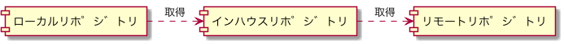
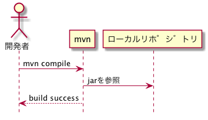
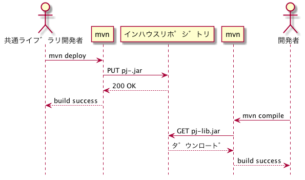

Mavenリポジトリ
Table of Contents
1 リポジトリの種類
| 種類 | 説明 | 主な用途 |
|---|---|---|
| ローカルリポジトリ | ローカルPC上にあるリポジトリ( ~/.m2/repository ) | キャッシュ |
| インハウスリポジトリ | PJ内で構築したリポジトリ | PJ成果物(jar等)をPJ向けに公開する |
| リモートリポジトリ | インターネット上に公開されたリポジトリ(Maven Central, jcenter等) | ライブラリを公開する |

2 ローカルリポジトリ
- ファイルシステム上のキャッシュ(~/.m2/repository)。
- mavenで使用するライブラリは必ずここにキャッシュされる。

3 インハウスリポジトリ
3.1 PJのライブラリをデプロイ・取得する

3.2 リモートリポジトリのファイルを取得する
hide footbox actor "開発者" as dev participant mvn participant "ローカルリポジトリ" as local participant "インハウスリポジトリ" as inhouse participant "リモートリポジトリ" as remote dev -> mvn : mvn test mvn -> local : jarを取得する mvn <-- local : 存在しない mvn -> inhouse : GET junit-3.8.1.jar inhouse -> remote : GET junit-3.8.1.jar inhouse <-- remote : ダウンロード dev <-- inhouse : ダウンロード
4 リモートリポジトリ
デフォルトではMaven Centralが有効なリモートリポジトリとして設定されている。
mvn help:effective-pom